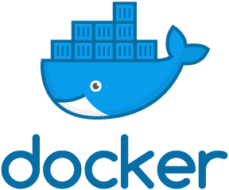

Presentacion
Hola, me llamo Willian Kana y actualmente soy estudiante de Diseño y desarrollo de software en el instituto TECSUP para un futuro desempeñarme como developer en esta industria.
Sobre mi
Soy una persona fascinada por las ciencias computacionales desde que descubrí esta carrera en mi juventud, y aunque aun soy estudiante tengo planeado poder crear aplicaciones que ayuden y sean de impacto en la sociedad.
Tecnologias y lenguajes de Programacion
Aprendí y hago uso de estas tecnologias:
Lenguaje
|
Descripcion |
|---|---|
|
|
pythonUtilizo python orientado a la inteligencia artificial y analisis de datos con librerias como pandas, numpy o tensorflow. |
|
|
JavaConocimiento intermedio en java para la creacion de aplicaciones con uso de base de datos locales. |
|
|
mySQLConocimiento en modelamiento y creacion de base de datos relacionales estables con mysql, ademas aplicaciones que hacen uso de base de datos. |
|  |
DockerConocimiento intermedio de docker para el despliegue de software en diferentes sistemas operaticos, agilizando la creacion y testing de aplicaciones en la gran variedad de SO en el mercado. |

|
HTML - CSS - JSConocimiento en creacion de paginas web con html css y javascript de mano con el framework de bootstrap. |
Aun sigo aprendiendo muchas más herramientas y simplemente destaco las mencionadas.
Más Informacion:
Enviame tu correo para más informacion.